This worksheet covers the fundamental skills needed to animate.
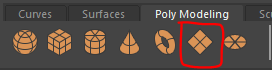
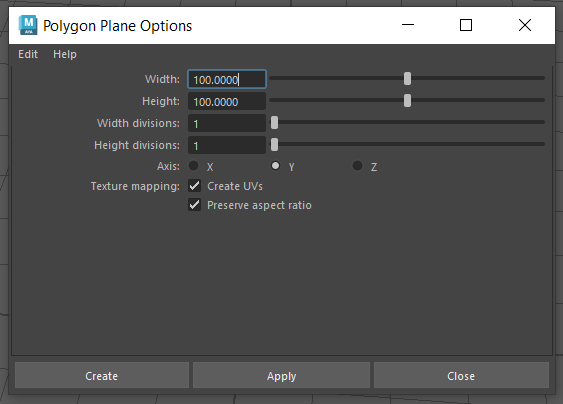
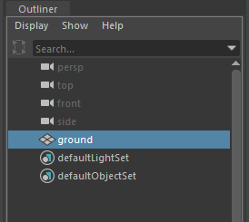
Double click on the polygon sphere button
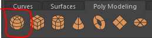
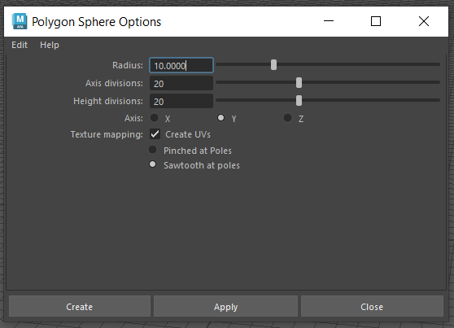
rename it to "ball" in the outliner.
Try to give the ball a colour. (HINT: With the ball selected right click and choose "Assign new material" )
Now that we have set up our scene we can start to animate.
When animating it will be helpful to have access to different panel.
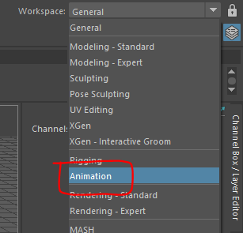
On the right we have the channel box this is where we can keyframe the properties we want to animate.
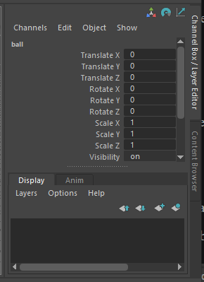
At the bottom of the screen is the range slider, this is where we change the settings for the animation
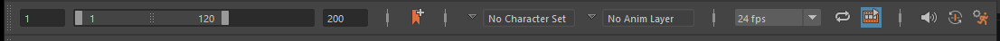
Above this is the timeline, this shows us when we have set keyframes on the selected object.
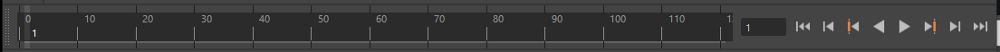
Finally, we have the graph editor, this shows how each keyframe transitions to the next.
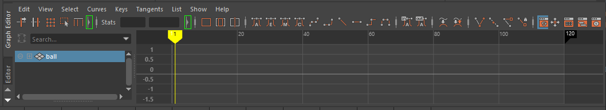
We will use all these panels in the worksheet.
We want the animation to run at 30 frames per second (FPS) and be a few seconds long.
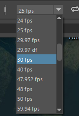
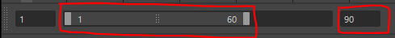
Move the slider to the far left, and change the right hand number to 60. This shows the range currently viewable in the timeline above.
Lastly, click on the time slider preferences button in the bottom right to open the panel
Now that we have set the animation settings we can start to animate our ball.
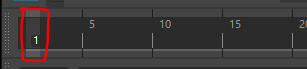
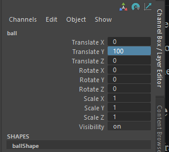
-To set a key frame, right click on Translate y in the channel box and select Key selected
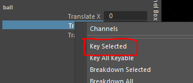
The property should turn red to indicate that it has a key frame, you should also see a red line on the timeline on frame 1.
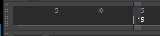
Move the ball down so that it is just touching the ground (it may be helpful to go into the side view)
Keyframe the ball again by right clicking on the Translate Y property in the channel box.
You should now have 2 key frames.
You can now set the last few keyframes on your own, we want the ball to bounce twice, so set the following:
frame 30, set y to 90 frame 45, set y to 10 frame 60, set y to 80
You can now play your animation by clicking on the play button to the right of the timeline (shortcut is alt/option + v)
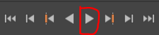
It should be animating, but it doesn't really look like its bouncing. Why does it look wrong?
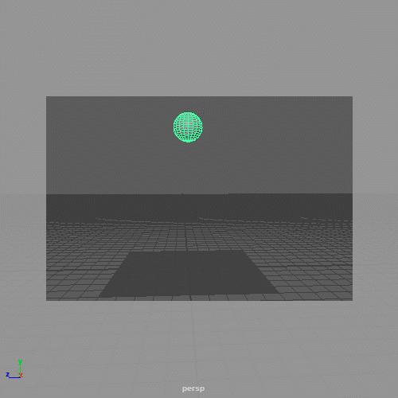
With the ball selected, hover over the graph editor and press f on the keyboard to fill the graph to the screen.
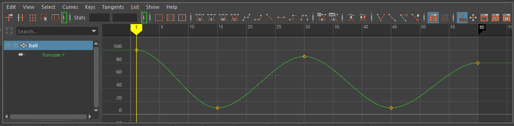
By default Maya creates a smooth transition between keyframes.
To make the bounce more realistic we want a sharp change of direction on the bottom where it hits the floor and incease the curve on the top where the ball looses the right against gravity.
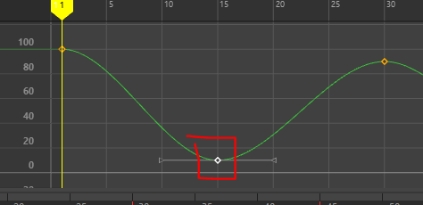
You can move the handles around to change the shape of the curve, but we want to move them around independently.
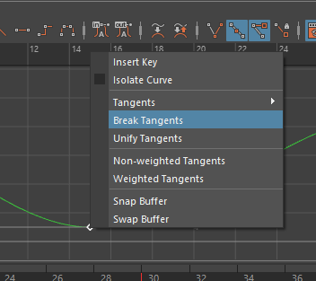
We can now move each handle independently but we also want to change the length so we have full control.
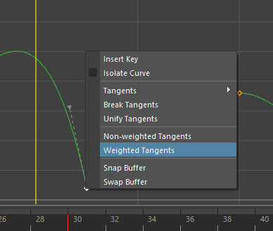
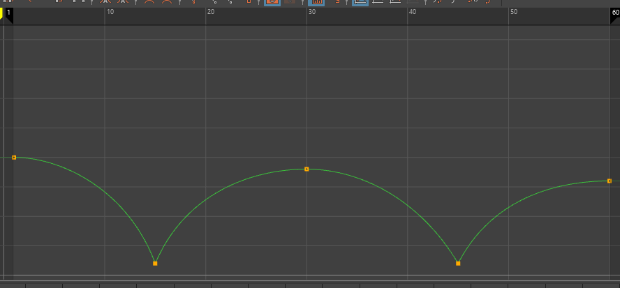
play the animation again to see the result.
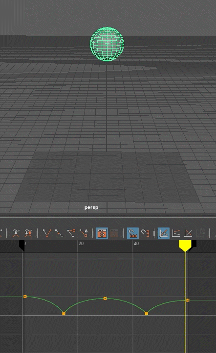
This is one of the most important principles in animation.
When an object moves or collides with something it will deform.
If your object is made of a rubbery or flexible material it will deform more.
We want the ball to stay circular at the top of the bounce.
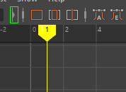
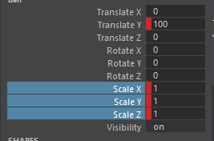
We can now move to frame 15 and squash the ball.
We need to squash it vertically by reducing the scale Y but to conserve the balls volume, this means we also need to stretch it horizontally by increasing Scale X and Scale Z.
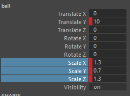
You may now see that the ball is above the ground
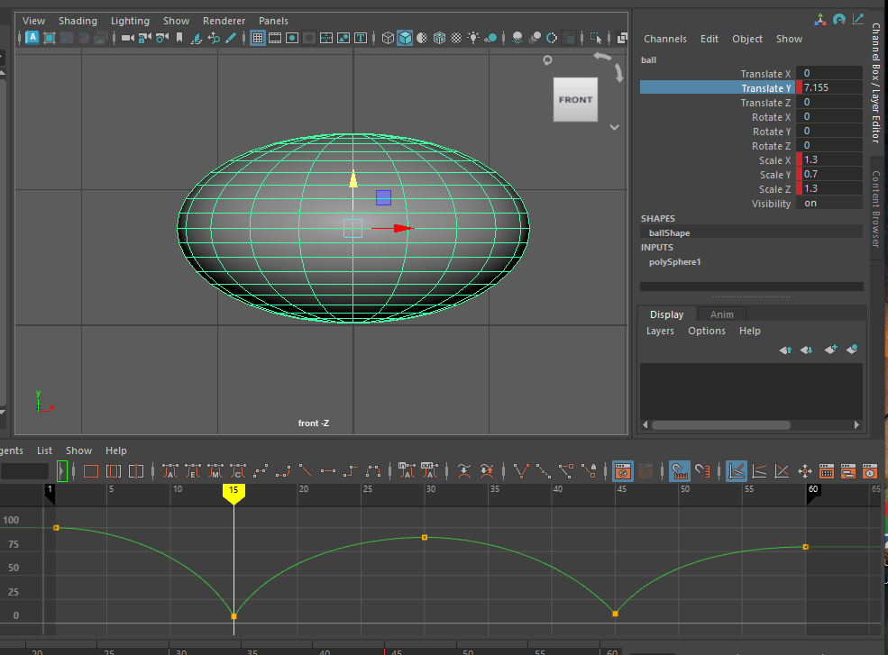
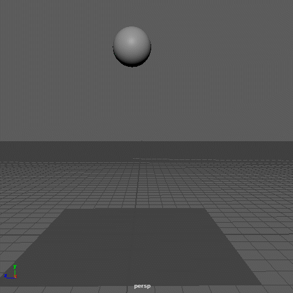
We have a similar issue as before, Maya is smoothing out the transition between keyframes so the ball starts to squash as it falls.
To fix this we need the ball to remain spherical until just before it hits the ground.
On frame 14, just before the ball hits the ground, key the scale of the ball to 1.
Do the same thing on frame 44.
The ball should now stay spherical as it falls, but you may also want to add a keyframe a after the bounce so that is returns to its previous shape quicker.
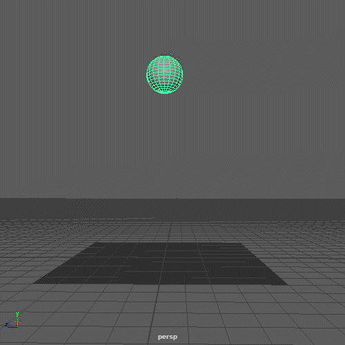
We now have a basic ball animation and you have covered all the basic skills of animating simple object in Maya.